Making a Virtual LOL Cat
An Introduction to Scratch
a project by Marc Scott
How to use this resource
- Read the slides. This is important.
- Read first and only then ask your teacher if you don't understand.
- Pay attention to the compass points at the bottom of the screen. You navigate using the cursor keys (or swiping on a tablet/phone).
- Normally you navigate by going right, and navigating down if you are stuck and need more help.
Scratch is a programming language that can be used to make small programs and games.
Above is the Graphical User Interface (GUI) for Scratch.
A GUI is how the a user interacts with software.
The screen is split into four main sections
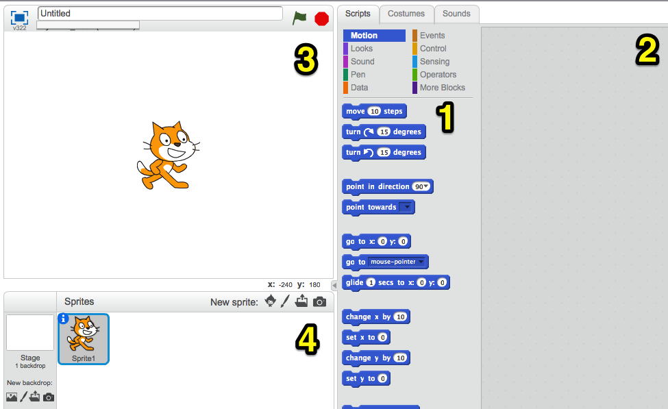- The Blocks Palette
- The Scripts Area
- The Stage
- The Sprite List
Getting to know Scratch
Scratch works by dragging blocks of code from the blocks palate into the script area. These blocks then can be stacked to create scripts. Scripts can be used to control sprites and a host of other things.
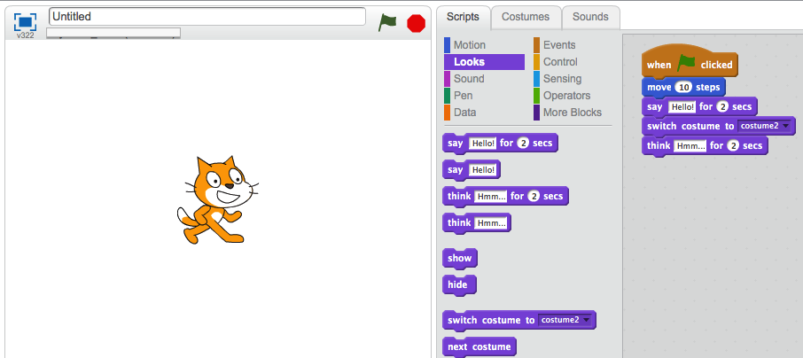If you've never used Scrath before, you might want to check the slide below to see how to build scripts.
Watch the video to learn how to build scripts.
Just watch, don't copy
Objectives
The purpose of this project is to bring you up to speed in Scratch.
You all probably have different skill levels, so this project is self-paced, which allows you to go at your own speed.
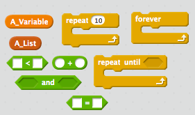
- What a variable is and how it is used
- What an operator is and how it is used
- What a function is and how is is used
- What a loop is and how it is used
- What a list is and how it is used
A Virtual LOL Cat
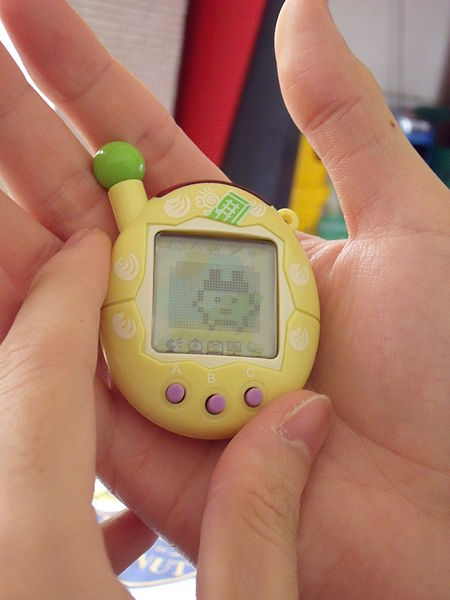Virtual pets are computer programs. The owner has to interact with the program to keep their pet alive and happy. They can feed and stroke the pet, or tell it to go to sleep
The aim of this project is to create a virtual pet. The pet will need to be fed, rested, given a drink and petted, as well as other things you can think of. If the player does not take care of the pet then it will die.
Our first script
Our first script will make the cat die!!!
Have a look at the slide below to see how it is done.
Creating a new Costume
First we need to create a new costume for the cat. This will be how it looks once it has died
Edit the name of the Sprite by clicking on the little blue i
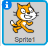 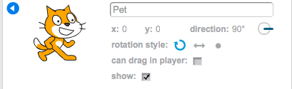There's a video below
Now click on the Costumes tab and then rename the first costume to Alive_Pet
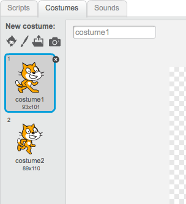There's a video below showing how to do this if you're stuck/
Now you'll need to import a new costume for your Pet. Use the image below to help you out here. I chose the angry ghost for mine
Rename it to Dead_Pet
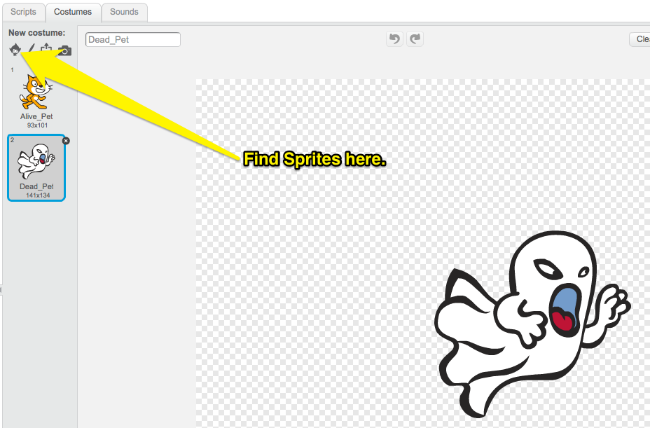There's another video to help below if you need it.
We're going to build a test script first and then use it in a Block if it works.
If you're used to using Scratch, then look at the pseudocode (pretend code) below and see if you can build the script yourself. If not then skip to the slide beneath.
when the space key is pressed
say "You let me die"
switch to Dead_Pet Costume
glide for 4 seconds to x:x, y:225
hide sprite
If you complete the script at any point then skip to the slide to the right
Here are all the blocks you need to make the script. See if you can assemble the script now
when the space key is pressed
say "You let me die"
switch to Dead_Pet Costume
glide for 4 seconds to x:x, y:225
hide sprite
If you need more help then go to the slide below.
Here is the completed Script
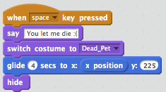If you struggle to put it together then look at the slide below
Here's a video showing the script being constructed
A Problem
If you're script works then when you hit space the Cat dies
However, he stays dead and we can't run the script again
Reset Script
We're now going to make a script that we can use to reset the Cat sprite
If you're getting the hang of this now then just follow the psudocode below, if not then got to the next slide down. Once you've built a succesful script navigate right
When 'Green Flag' clicked
Switch to Costume "Alive_Pet"
Show Sprite
Goto position x:0, y:-125
Here are all the blocks you need to make the script. See if you can assemble the script now
When 'Green Flag' clicked
Switch to Costume "Alive_Pet"
Show Sprite
Goto position x:0, y:-125
If you need more help then go to the slide below.
Here is the completed Script
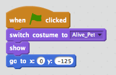If you struggle to put it together then look at the slide below
Here's a video showing the script being constructed
Functions
Functions are extremely important. They allow is to keep our scripts tidy by grouping them into Blocks. They also allow us to run the same code over and over again in different parts of our program
This part is easy. You just need to create a new function (Scratch calls them Blocks) and call it Pet_Death.
Next replace the "When Space is pressed", with your new function.
It should look like this
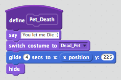If you can't figure it out then skip it for now, as it's shown in the video in the last part of the next section
Making the Pet get hungry

We're now going to make a script that will make the cat get hungry
For this we're going to need a variable
A variable is made up of two things
- A storage location for some data (like numbers or letters)
- A name that points to that location
In other words, we can use a variable to store some data in our program
Here's the pseudocode
when "Green Flag" clicked
set Pet_Hunger to 0
repeat until Pet_Hunger=100
change Pet_Hunger by 1
wait 1 second
Pet_Death
End All
Here are all the blocks you need to make the script. See if you can assemble the script now
when "Green Flag" clicked
set Pet_Hunger to 0
repeat until Pet_Hunger=100
change Pet_Hunger by 1
wait 1 second
Pet_Death
End All
If you need more help then go to the slide below.
Here is the completed Script
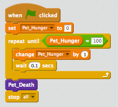If you struggle to put it together then look at the slide below
Here's a video showing the script being constructed
Breaking down the script
You've actually just used some fairly complicated concepts in Computing
Variables
The variable starts of storing the number 0. But we can change that number at any time we like. We added 1 to it within a loop. The name of the variable stays the same, but the number it points to can change.
Loops
Loops are very powerful. We can cause the same set of instructions to happen over and over again, until some condition is met. In this case the;
change Pet_Hunger by 1
wait 1 second
keeps happening until Pet_Hunger reaches 100. Then the loop ends and the script continues
Pets get hungry
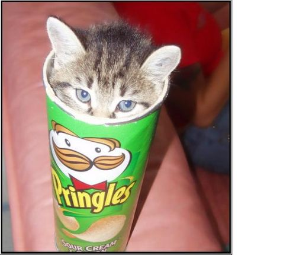So we now have a program that basically kills a Cat
To make this into a more entertaining game, we need to be able to feed our pet
- Create a new Sprite and choose a costume for it, one that looks like food.
- Give the Sprite a sensible name like Pet_Food.
- Create the script detailed below.
when Pet_Food clicked
change Pet_Hunger by -10
There's a video on the slide below
Testing your script
Click the green flag and let your script run
You should see the Pet_Hunger veriable gradually increase.
When it hits 100, your pet should die
If it doesn't work then get a friend or your teacher to look over your code so far.
Pets get thirsty
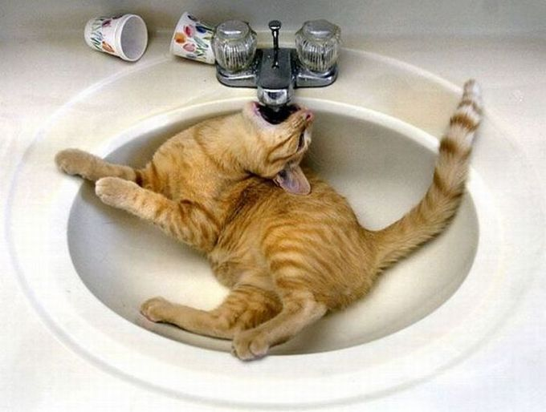We now need to create a new script that will make our pet get thirsty.
We're going to use the same method as we used to make the pet get hungry.
Give it a go now, but if you need help then there's further instructions on the slides below
The pseudocode
Firstly create a new variable called Pet_Thirst
when "Green Flag" clicked
set Pet_Thirst to 0
repeat until Pet_Thirst=100
change Pet_Thirst by 1
wait 1 second
Pet_Death
End All
The blocks
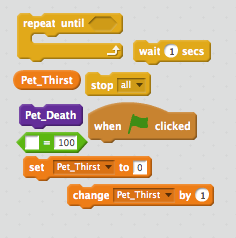The script
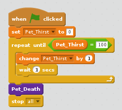The video
Giving the pet a drink
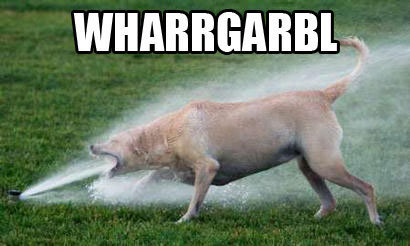Let's set up a way to give our pet a drink
Just like when we fed out pet we need a sprite to represent a drink. This time have a go at drawing the sprite and then setting up a script so that clicking on it decreases Pet_thirst
There's further instructions on the slides below, but try not to use them unless you have to.
The video
Pets need hugs
The penultimate (second from last) script of this type we're going to make is one to make our pet happy.
Have a think about this one, before you scroll down and look at the hints.
We need the pet to start happy and get sadder and sadder as time goes on. When the pet's happiness reaches zero it should die. If you click on the pet (we can't really give it a hug), it's happiness should increase
Have a go at completing this yourself before using the hints below
The pseudocode
when "Green Flag" clicked
set Pet_Contentment to 100
repeat until Pet_Contentment = 0
change Pet_Thirst by -1
wait 1 second
Pet_Death
End All
The Blocks
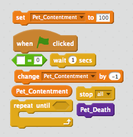The Script
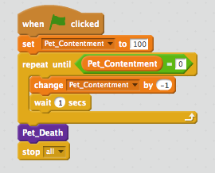The video
Pets get sleepy
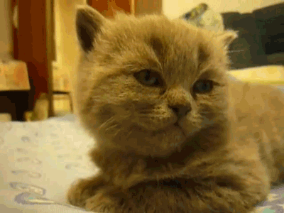The next one is up to you and you alone. Create a script using a variable called Pet_Tiredness. It should start at 0 and increase up to 100, at which point the pet dies.
The player can rest the pet by clicking on a pet-bed (you can find, import or create your own sprite).
Once you've completed the script, get your teacher to check it.The setup so far
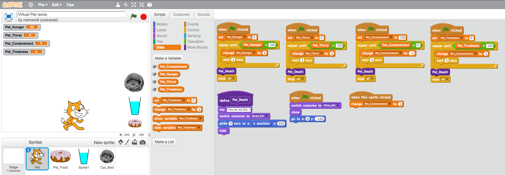Customising your Virtual lol Cat
Now for some customisation.
At the moment all the variables are initialised (started) at either 0 or 100. They also change be increments of 1 or -1 and do so in 1 second steps.
Customise your script a little. Maybe Pet_Tiredness can start at 200 and be reduced by 0.1 every 2 seconds, for instance
Play around with your variables and loops until you are happy with your game. Then we can move on to the next section.
Getting the pet to talk to you.
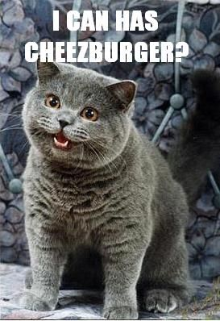It might be a good idea to get rid of the variables that are displayed on the game screen and instead have the pet sprite warn when it is getting hungry/thirsty or tired
We'll do it the easy way first and then make it a little tricky
Scroll down to get started.
A forever loop
forever loops are quite useful. They will run and run and run. We can use forever loops to constantly 'listen' out for an event, like a variable hitting a certain value
We're going to use a forever loop to 'listen' out for when the pet is hungry, and then get it to run a function.
The pseudocode
We're going to need two scripts here. The first will be a forever loop that listens out for when pet hunger gets too high
The second will be a function that runs when called within the forever loop
def hungry ask 'I CAN HAZ CHEEZBURGER?' for two secondswhen "Green Flag" clicked forever if Pet_Hunger > 75 hungry
The Blocks
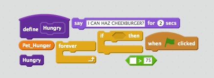The Script
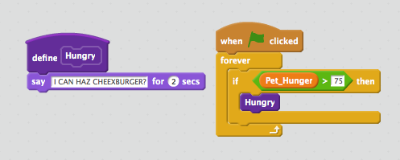The video
Adding some randomness
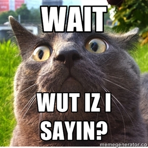It get's boring if all the cat says is
"I CAN HAZ CHEEZBURGER?"
Lets add some randomness by using a list.
Lists
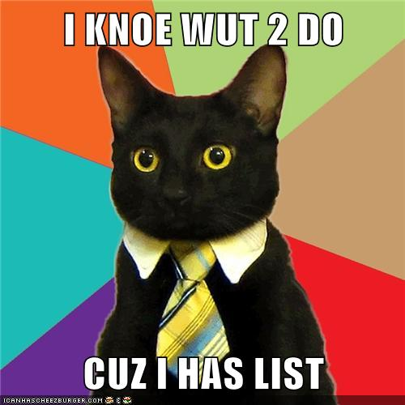Lists are a type of Data Structure.
An example
- OH HAI
- R U K?
- K THX BAI
This is an example of a list. It contains three items. They are all strings (letters).
We could put numbers into a list instead if we wanted.
The list is ordered. For instance, the second item is "R U K?"
Creating a list
You're going to need to create a list and fill it with about five sentences.
Each sentence should be asking for food in some form
You can use normal English or lol speak if you want.
The video
Speaking from the list
Next we're going to get the pet to select random elements of the list to say
To do this we're going to edit the Hungry function
Here's the pseudocode
def hungry
say item (random from 1 to 5) from Hungry
The blocks
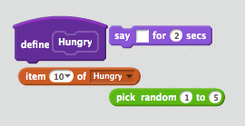The Script
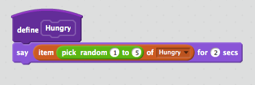The video
Now it's your turn
You can now add some extra features to your program
Here are some ideas, or come up with your own...
- Add lists to give the pet options to speak when it is thirsty and tired.
- Add scripts so that the pet needs exercising. It can even jump up and down as it exercises.
- Add scripts so that the pet needs to go to the toilet.
- Add scripts so that your pet gets naughtier and naughtier and needs telling off.